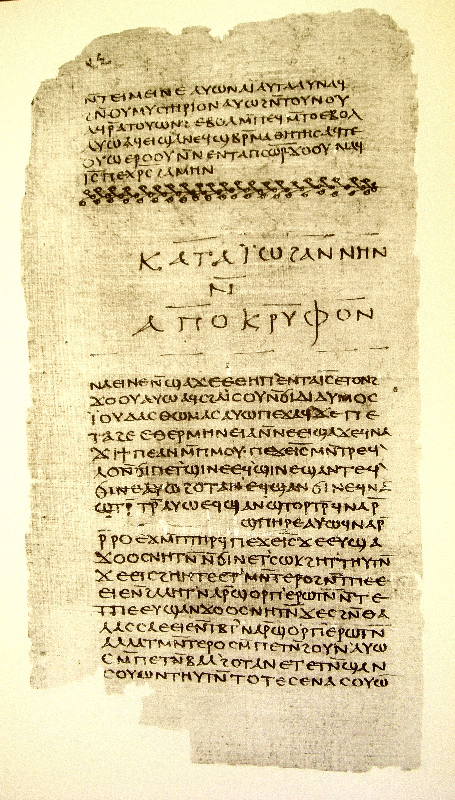

Nag Hammadi Library

- Find Name
- Nag Hammadi Library
- Historical Period
- Roman
- Artifact Date
- 4th century AD (Coptic copies of 2nd-century Greek texts)
- Date Discovered
- 1945 (found)
- Discovery Location
- Jabal al-Tarif, near Nag Hammadi, Egypt
- Current Location
- Coptic Museum, Cairo, Egypt
- Timeline Era
- Early Church
- Description
- Thirteen leather-bound codices containing fifty-two texts, discovered by a farmer near Nag Hammadi in 1945. They preserve Gnostic writings, including the Gospel of Thomas, in 4th-century Coptic translations of 2nd-century Greek originals. These are non-canonical texts: their significance lies in the canon debate and in early Christian diversity, not in the biblical text itself, and no text here should be treated as Scripture.
- Biblical Significance
- Nag Hammadi shows why the church had to ask which books were apostolic. Beside the four Gospels stood rival gospels with a different Jesus, and the church's answer — tested against the apostles' teaching — shaped the New Testament readers hold today.
- Evidence Class
- Contextual
- Interpretations
- Scholars agree the codices are 4th-century Coptic copies of earlier Greek works; debate concerns the origins and dating of individual texts, not the library's existence or its non-canonical character.
Awaiting Review Not yet checked against scholarly sources. Treat its claims as provisional until this entry is reviewed. About verification
Last reviewed: not yet reviewed